1장. 서론
1-1 연구 배경 전 세계적으로 평균 기온이 지속적으로 상승함에 따라 기후변화의 불확실성이 높아지고 있다. 대한민국의 경우 다른 국가 대비 온난화 진행속도가 빠를 뿐만 아니라, 한파, 겨울철 이상 고온, 폭우, 폭염 등의 빈도가 점점 증가하고 있으며, 이러한 기후변화에 대한 국제사회와 시민사회의 관심이 점차 커지고 있다. (박진한, 2022) 2015년 파리 기후협약을 시작으로 2021년 유엔 기후 변화 회의에서 세계 각국 정상들은 온실가스를 줄이겠다고 합의했으며, 특히 미국과 유럽은 2050년까지 탄소 중립을 실행하겠다고 발표했다. 프로젝트 관리 직무의 전문 회원 협회인 PMI(Project Management Institute)는 Global Megatrends 2022 보고서에서 기후 변화 위기를 세계 메가 트렌드 중 한가지로 발표하였다. 보고서에 따르면 온실가스를 발생하는 주요 분야는 발전소와 공장/건설, 농업, 운송 수단 등이 있다. 그 중에서 발전소의 온실가스 배출이 전체의 약 32%로 가장 많고, 그 다음으로 수송 수단에서 발생하는 온실가스가 약 17%를 차지하고 있다. (PMI, 2022) 세계 각국의 탄소중립 정책으로 인해 전기차를 포함한 친환경 차 시장이 커지고 있으며, 특히 코로나19 이후 전세계 전기자동차 시장이 급성장하는 모습을 보여주고 있다. 이는 코로나19로 발생한 디지털 전환과 저탄소 트렌드, 다양한 전기차 출시에 따른 소비자의 선택 폭 증가 그리고 각국의 전기차 보조금 같은 친환경 정책이 영향을 미친 것으로 분석된다. 친환경차 시장에서 전기차가 가장 큰 비중을 차지하고 있으며, 현재까지 중국이 전세계 전기차 판매 수와 증가율 1위를 차지하고 있다. 중국 이외에 유럽과 미국에서도 탄소중립과 같은 환경 정책으로 인해 꾸준히 전기차 시장 규모가 커지고 있다. (김꽃별, 2022; 장병훈, 배기원, 2022)
<표1: 주요 국가/경제권별 전기차 판매 현황>
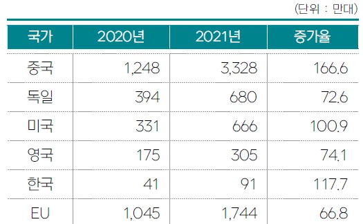
친환경차의 종류는 하이브리드차(HEV: Hybrid Electric Vehicle), 플러그인-하이브리드차(PHEV: Plug-in Hybrid Electric Vehicle), 전기차(BEV: Battery Electric Vehicle), 수소연료전지차(FCEV: Fuel Cell Electric Vehicle)로 크게 4가지가 있다. HEV는 모터와 엔진의 동력의 조합으로 구동되는 자동차로 출발할 때와 저속으로 운행할 때는 모터의 동력으로 움직이고, 자동차의 운동에너지를 전기로 변환해 배터리를 충전하기 때문에 별도의 충전없이 사용할 수 있다. PHEV도 모터와 엔진 둘 다 사용하지만, 외부 전원을 통해 배터리를 충전할 수 있다는 점에서 HEV와 차이가 있다. BEV는 엔진 없이 배터리에 충전된 전기만을 이용해서 움직이는 자동차다. FCEV 역시 BEV와 같이 엔진이 없지만 수소와 산소를 반응시켜 얻은 전기를 이용해 움직인다는 점에서 차이가 있다. <그림 1>은 앞에 말한 네 가지 친환경차의 구조도를 나타내는 그림이다. (장병훈, 배기원, 2022)
<그림 1: 친환경차 구조도>
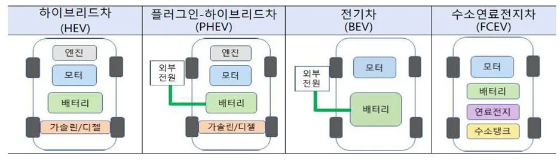
친환경차 시장에서 전기차는 가장 큰 비중을 차지하고 있으며, 내연기관차에서 전기차로 자동차 시장이 변화하면서 자동차 기업의 핵심부품 및 경쟁요소도 변하고 있다. 기존 내연기관 자동차의 경우 고출력, 정숙성, 내구성, 안정성이 중요한 경쟁요소이기 때문에 엔진과 변속기가 핵심부품이었다. 하지만, 전기차의 경우 주행거리, 충전속도 내구성, 안전성, 가격경쟁력이 자동차 회사의 중요한 경쟁요소다. 전기차 배터리가 전기차의 주행거리와 안정성과 같은 성능을 결정짓고, 전기차 생산원가의 30~40%를 차지하고 있기 때문에, 전기차에서는 배터리가 핵심부품이라고 볼 수 있다. (장병훈, 배기원, 2022) 전지는 크게 일차전지와 이차전지로 나눠진다. 일차전지는 한 번 사용하면 재사용이 불가능하지만, 이차전지는 외부 전기에너지를 화학에너지 형태로 전환한 에너지 저장시스템으로 충전과 방전을 반복하여 사용할 수 있다. 이차전지는 니켈카드뮴전지, 연축전지, 니켈수소전지, 리튬이차전지, 공기아연전지, 알카리망간전지 등 6가지의 형태로 나눠진다. (조지혜, 2017) 전 세계 전기차 배터리 시장은 유형에 따라 납축 배터리, 리튬이온 배터리 등으로 분류되고, 2020년 기준 리튬이온 배터리가 83.32%로 가장 높은 점유율을 차지하고 있으며, 납축 배터리가 그 뒤를 잇고 있다. (연구개발특구진흥재단, 2021) <그림 3>는 글로벌 전기차용 배터리 시장 규모를 보여주고 있다. 2016년 150억 달러였던 글로벌 전기차 배터리 시장 규모는 2019년 388억 달러로 2배 이상 증가하였으며, 2026년에는 939.4억 달러까지 성장할 것으로 예상된다. (손창우, 2020)
<그림 2: 글로벌 전기차 배터리 시장의 유형별 시장 규모, 단위: 백만 달러>
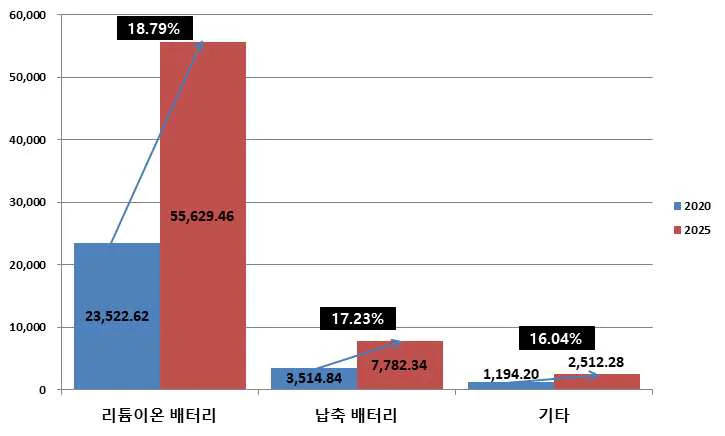
<그림 3: 글로벌 전기차용 배터리 시장 규모, 단위: 억 달러>
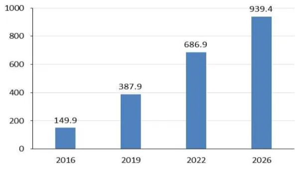
1-2 연구목적 친환경에너지와 배터리, 그리고 전기차 분야에서 시장조사와 컨설팅을 수행하고 있는 SNE리서치는 매월 배터리와 전기차분야 시장 조사결과를 발표하고 있으며, 전세계의 시장표준으로 자리잡아 관련 제조사, 금융기관, 정부 공공기관의 공식데이터로 인용되고 있다. (김광주, n.d.) <그림 4>은 각 배터리 제조사의 중국 시장을 포함한 글로벌 전기차용 배터리 시장 점유율을 연도별로 나타낸 그래프이며, <그림 5>는 한∙중∙일 국가별 중국 시장을 포함한 글로벌 전기차용 배터리 시장 점유율을 연도별로 나타낸 그래프다.
<그림 4: 글로벌 전기차용 배터리 시장 점유율 (중국시장 포함)>
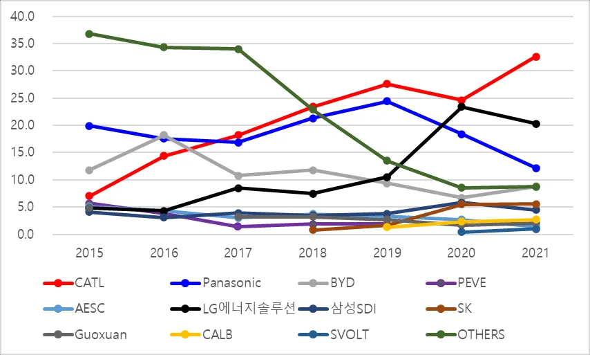
<그림 5: 연도별 한∙중∙일 글로벌 배터리 시장 점유율 변화 (중국시장 포함)>
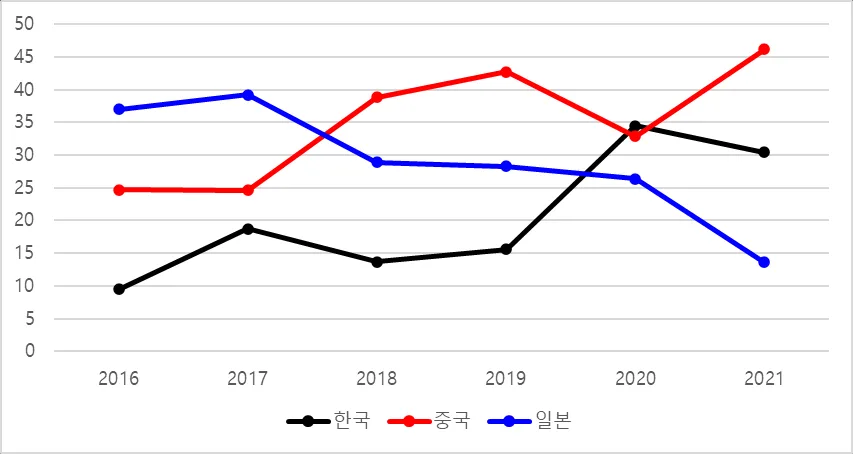
<그림 6: 글로벌 전기차용 배터리 시장 점유율 (중국시장 제외)>
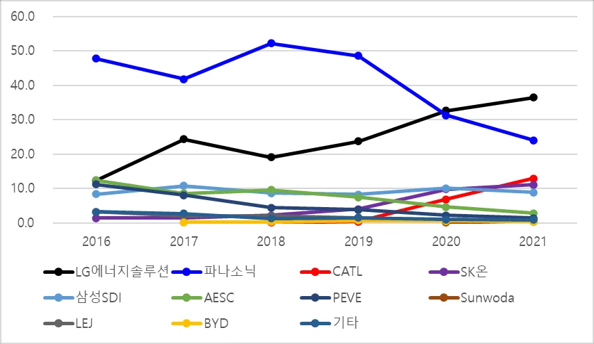
<그림 7: 연도별 한∙중∙일 글로벌 배터리 시장 점유율 변화 (중국시장 제외)>
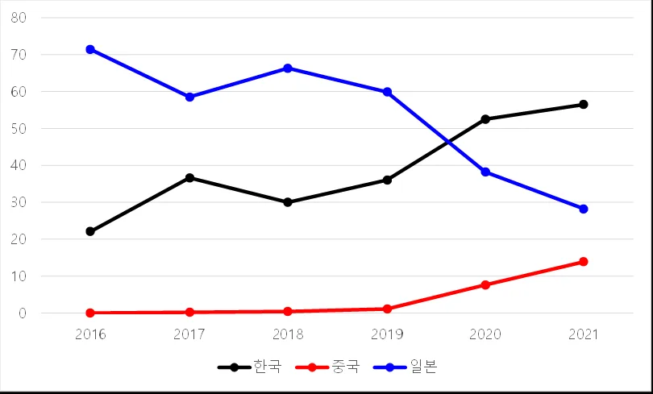
중국시장을 포함한 글로벌 전기차용 배터리 시장에서는 기존에 시장 점유율 1위를 차지했던 일본의 파나소닉은 쇠퇴하는 추세이며, 중국의 CATL의 증가추세가 돋보인다. 또한, 국가별 전기차용 배터리 시장 점유율을 비교했을 때, 일본에서 중국으로 시장 점유율이 변하고 있음을 나타낸다. <그림 6>와 <그림 7>은 중국 시장을 제외한 각 배터리 제조사의 연도별 글로벌 전기차용 배터리 시장 점유율과 한∙중∙일 국가별 글로벌 전기차용 배터리 시장 점유율을 연도별로 나타낸 그래프다.
중국시장을 제외한 전기차용 배터리 시장에서도 기존에 1위였던 일본의 파나소닉 점유율이 하락 추세이며, LG에너지솔루션과 CATL의 증가추세가 돋보이고 있다. 또한, 국가별 전기차용 배터리 시장 점유율을 비교했을 때, 일본에서 한국으로 시장 점유율이 변하고 있음을 알 수 있다. <그림 6>에서 볼 수 있듯이 기존 전기차 배터리 시장 점유율 1위였던 일본의 파나소닉은 2020년 한국의 LG에너지솔루션의 역전을 당했고, 2021년 점유율 격차는 더욱 커졌다. 따라서, 본 연구는 리튬이온 전지 후발기업인 LG에너지솔루션이 어떻게 중국 시장을 제외한 전기차 배터리 시장 점유율 1위 기업이 되었는지 분석하는데 그 목적이 있다.
2장. 이론적 배경
2-1 리튬 이온 전지 2-1-1 역사 리튬을 이용한 전지 개발은 1960년 미국 항공우주국 NASA를 시작으로, 1970년대 초반 음극에 리튬을 사용하는 일차전지가 발명되었다. 이후 1975년 일본의 산요가 리튬-망간 산화물을 이용해 일차전지를 개발했지만, 안전성 문제와 에너지 밀도 한계를 극복하지 못해 대중화에 실패했다. (신우철, 2018) 1976년 스탠포드에서 박사를 수료한 뒤 엑손의 연구부서에서 근무했던 스탠리 휘팅엄(Stanley Whittingham)은 리튬 이온이 양극에 삽입과 탈리를 하더라도 양극 구조가 붕괴되지 않은 양극용 다공성 물질인 Ti2S를 사이언스 논문에 발표했다. (James Temple, 2021; Stephan, Anadon, H.Hoffmann, 2021) 1980년 John Goodenough와 그의 동료들과 함께 높은 에너지밀도의 양극 재료인 LCO (리튬코발트산화물)를 개발하였고, 1983년 Samar Basu와 Rachid Yazami, Philippe Touzain은 음극에 흑연을 사용하는 것에 대한 연구를 시작했다. 1985년 일본의 아사히 카세이社에서 양극에 LCO 음극에 petroleum coke를 사용한 초기 리튬이온 전지를 개발하였으나 상용화 되지 못했고, 1991년 일본의 Sony가 후속 연구를 통해 처음으로 리튬 이온 전지를 상용화에 성공했다. (신우철, 2018; Stephan, Anadon, H.Hoffmann, 2021) 이후, 1999년 LG화학, 2000년 삼성SDI에서 이차 전지 양산을 시작하면서 한국 기업들도 뒤늦게 이차 전지 산업에 진출하였으며, 중국의 리튬 이온 전지 제조업체인 CATL은 2011년 ATL에서 분사되어 설립되었다. (LG에너지솔루션, n.d.; 삼성SDI, n.d.; Wikipedia, n.d.) 1990년대에 리튬 이온 전지는 주로 일본의 Sony, Sanyo, Panasonic과 같은 전자 회사에서 노트북, 휴대폰 및 디지털 카메라와 같은 휴대 전자기기에 사용하기 위해 주로 생산되었다. 2011년 이후 리튬 이온 전지는 전기자동차에 점점 적용되기 시작했고, 2015년에는 전자기기를 제치고 리튬 이온 전지 시장에서 가장 큰 점유율을 차지한 이후 지속적으로 점유율이 높아지고 있다. (Malhotra, Zhang, Beuse, Schmidt, 2021) 2-1-2 종류 리튬 이온 전지는 형태 및 셀 타입에 따라 원통형, 각형, 파우치형 배터리로 나눌 수 있다. (신유리, 2021; 조윤상, 하태원, 정승원, 2019)
원통형 배터리는 포장재로 원통형 모양의 스틸 캔 케이스를 사용한다. 원통형 배터리는 가장 오래된 방식으로 기술이 검증되었으며, 가격이 저렴하고 대량 생산이 용이하다는 장점이 있다. 또한, 원통형 배터리 내부에 안전장치를 가지고 있기 때문에 안전성이 높다는 장점이 있다. 하지만, 에너지밀도가 낮고, 규격이 정해져 있어서 정형화된 제품 이외에는 채택이 어렵고 대형으로 만들기 어려운 단점이 있다. 주요 배터리 제조사로는 일본에 파나소닉과 한국에 LG에너지솔루션, 삼성SDI가 있고, 원통형 배터리를 사용하는 주요 완성차 업체로는 테슬라가 있다. (전창현, 2019; 신유리, 2021; SK이노베이션 전문 보도채널, 2021)
<표2: 리튬 이온 전지 종류별 특징>
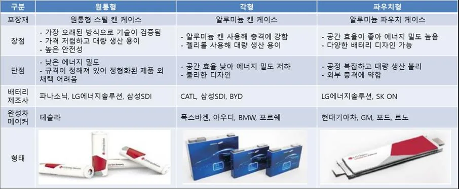
각형 배터리는 포장재로 알루미늄 캔 케이스를 사용한다. 각형 배터리는 외부 충격에 강하고, 원통형과 같이 Winding 방식으로 제작하기 때문에 파우치형에 비해 공정이 간단해 대량생산에 유리하다. 하지만 공간 효율이 낮아 에너지 밀도가 저하되는 단점과, 디자인이 정해져 있어 불리하다는 단점이 있다. 주요 배터리 제조사로는 한국의 삼성SDI와 중국의 CATL, BYD가 있으며, 각형 배터리를 사용하는 주요 완성차 업체로는 폭스바겐, 아우디, BMW, 포르쉐가 있다. (전창현, 2019; 신유리, 2021; SK이노베이션 전문 보도채널, 2021)
파우치형 배터리는 포장재로 알루미늄 파우치 케이스를 사용한다. 파우치형 배터리는 공간효율이 좋아 높은 에너지 밀도를 가질 수 있으며 다양한 형태로 제조할 수 있다는 장점이 있다. 하지만, 외부 충격에 약하고, 공정이 복잡해 대량 생산에 불리하다는 단점이 있다. 주요 배터리 제조사로는 LG에너지솔루션과 SK ON이 있으며, 파우치형 배터리를 사용하는 주요 완성차 업체로는 현대∙기아차, GM, 포드, 르노가 있다. (전창현, 2019; 신유리, 2021; SK이노베이션 전문 보도채널, 2021)
2-1-3 제조공정 리튬 이온 전지의 제조 공정은 고도로 통합된 프로세스이며, 전해질 믹싱을 제외한 대부분의 단계는 일반적으로 배터리 제조업체에서 개발하고 있다. (Sick, Broring, Figgemeier,2018) 리튬 이온 전지의 제조공정은 크게 양극과 음극을 제조하는 전극공정, 제작된 전극을 캔 또는 파우치에 넣어 조립하는 조립공정 그리고 Aging 및 충∙방전공정으로 전지를 활성화시키고, 불량품을 선별하는 화성공정으로 나눌 수 있다. (메리츠증권, 2020; 장찬희, 이재천, 2018)
전극 공정은 양극과 음극을 만드는 데 필요한 여러가지 원자재들을 계량한 뒤 이를 혼합하여 슬러리(slurry)를 제조하는 믹싱(mixing) 공정부터 시작된다. 이후 혼합된 슬러리를 포일(foil)에 도포하는 코팅을 하고, 코팅된 전극의 두께를 압연한다. 그리고 압연된 전극을 각 사이즈에 맞게 잘라주는 시팅 또는 슬리팅 (Sitting or Slitting)을 한 후에 건조공정을 거치게 된다. (메리츠증권, 2020; battery lab, 2022)
<그림 8: 리튬 이온 전지 생산 과정>
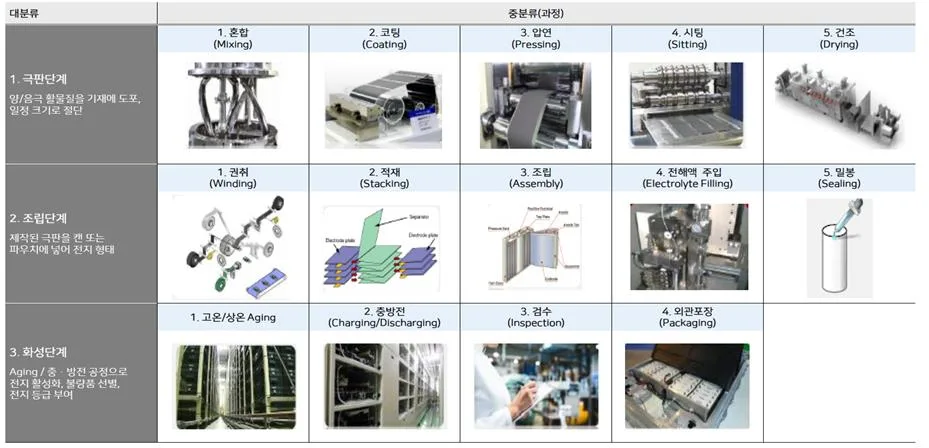
조립공정에서는 리튬 이온 전지의 4대 요소인 양극과 음극 그리고 분리막과 전해질을 모아서 조립하는 공정이다. 조립공정은 양극, 음극 분리막을 한 묶음으로 만드는 과정부터 시작하는데, 각형과 원통형 배터리는 권취(Winding)방식으로 조립하여 젤리롤을 만들고, 파우치형 배터리는 적재(Stacking)방식으로 조립하여 Bi-cell을 만든다. 여기서 Bi-cell은 양극-분리막-음극-분리막 혹은 음극-분리막-양극-분리막-음극의 구조로 제작된 Cell을 의미한다. 제작된 젤리롤 혹은 Bi-cell을 배터리 타입에 맞는 포장재에 넣은 뒤 전해액을 주입하고 밀봉하는 것으로 조립공정은 끝나게 된다. (메리츠증권, 2020; battery lab, 2022)
활성화 공정은 조립공정이 끝난 배터리에 전기적 특성을 부여해 배터리 역할을 할 수 있도록 만드는 공정이다. 이 공정에서는 배터리를 충전과 방전을 하면서 배터리를 활성화시키고, 고온/상온 에이징을 통해 전해액이 배터리 내부에 골고루 분산되어 리튬이온이 양극과 음극 사이를 원활하게 이동할 수 있도록 만들어준다. 활성화가 끝나게 되면 불량 전지들을 선별하고 검수하는 단계를 거쳐 양품 전지들만 포장하여 고객에게 납품하게 된다. (메리츠증권, 2020; battery lab, 2022)
2-2 아키텍처 이론 Herber A.Simon(1962)은 바이오, 물질, 화학, 사회, 경제 등 모든 인공물은 계층 구조로 분해하여 이해할 수 있다고 하였다. Ulrich(1995)는 제품의 아키텍처를 기능적인 요소의 배열, 기능적인 요소와 부품 간에 관계 그리고 부품들 간에 상호작용하는 정도를 분석하여 제품의 아키텍처를 Modular 아키텍처와 Integral 아키텍처로 분류했다. Modular 아키텍처는 제품의 기능과 부품들이 일대일 대응 관계를 형성하고, 부품들은 분리된 인터페이스를 가지고 있다고 정의하였다. 반면, Integral 아키텍처는 제품의 기능과 부품들이 일대일 관계가 아닌 복잡한 관계를 형성하고 있으며, 부품들이 결합된 인터페이스를 가지고 있다고 정의하였다. Shibata et al.(2005)는 부품들의 개방 범위에 따라 제품의 아키텍처를 분류하였다. 부품의 인터페이스가 산업 내에서 어느정도 표준화가 되어있는지에 따라 개방형(Open) 아키텍처와 폐쇄형(Closed) 아키텍처로 구분하였다. 개방형(Open) 아키텍처는 부품의 인터페이스가 타 기업까지 확장되어 업계의 모든 기업이 부품을 공유하는 경우에 해당한다. 반면, 폐쇄형(Closed) 아키텍처는 특정 회사 내에서는 표준화 되어있지만, 동종업계 다른 회사에서는 사용할 수 없는 경우를 해당한다. Fujimoto(2002, 2007)는 완성품 또는 부품을 생산하는 기업의 아키텍처와, 그것을 구매하여 부품으로 사용하는 기업의 아키텍처를 고려하여 4가지 아키텍처 유형을 제시하였다. <그림 9>은 제품의 공급자-소비자 아키텍처에 따른 4가지 아키텍처 유형을 분류한 매트릭스다. Integral Inside – Integral Outside 아키텍처의 경우, 생산 기업과 구매 기업 둘 다 복잡하게 생산하고, 다른 부품들과 상호의존성이 높은 제품이다. 보통 해당 제품은 구매 기업의 요구사항에 최적화되어 설계된 제품일 가능성이 높다. Integral Inside – Modular Outside 아키텍처에서는 생산 기업의 제품이 특정 고객에게 국한되어 있지 않기 때문에 표준화된 부품인 경우가 많다. 이런 제품은 같은 회사 내에 여러 제품에 탑재되거나 여러 회사에 납품하게 된다. (Fujimoto, 2002, 2007) Modular Inside – Integral Outside 아키텍처의 경우, 생산 기업에서 완성품을 모듈라형으로 설계 및 생산하는 반면에, 구매 기업에서는 해당 완성품이 다른 부품들과 상호의존성이 높은 제품이다. 이는 생산 기업이 구매 기업에서 요구하는 조건을 만족하는 최적화된 제품을 빠르고 저렴하게 공급할 수 있지만, 최적화된 정도는 Integral Inside – Integral Outside에 비해 약하다. (곽기호, 2019) 마지막으로, Modular Inside – Modular Outside의 경우, 생산 기업에서는 자신들의 제품을 산업 표준화된 부품들로 간단히 제작하면서, 구매기업에서도 다른 부품들과 상호의존성을 고려하지 않고 사용하는 제품이다. 이러한 아키텍처에 속해 있는 생산 기업은 다양한 완제품을 대상으로 가격 경쟁력을 확보하는 것이 중요하다. (곽기호, 2019)
<그림 9: 제품의 공급자-소비자 아키텍처에 따른 4가지 아키텍처 유형>
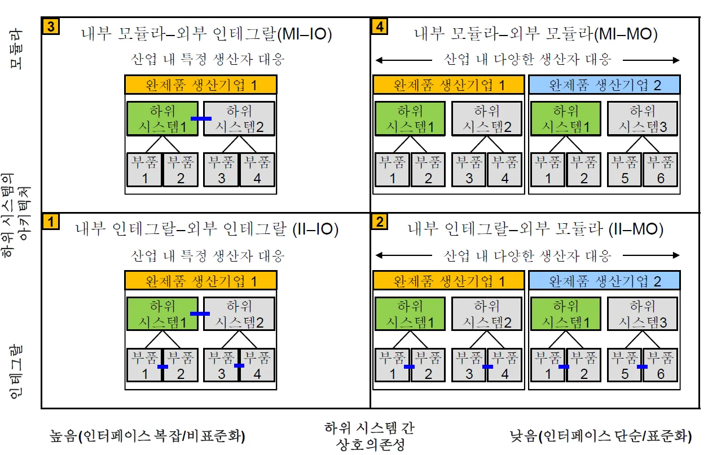
3-1 연구모형 리튬 이온 전지 후발 기업인 LG에너지솔루션이 일본 기업인 PANSONIC을 제치고 중국 시장을 제외한 전 세계 전기차 배터리 시장에서 어떻게 점유율 1위를 달성했는지 알아보기 위해 <그림 10>과 같이 연구를 진행했다. 전기차 배터리 산업과 LG에너지솔루션 사례를 분석한 내용을 바탕으로 LG에너지솔루션의 전기차 배터리 시장 추격 성공 요인을 도출하였다.
<그림 10: LG에너지솔루션 전기차 배터리 시장 추격 성공 요인 연구모형>
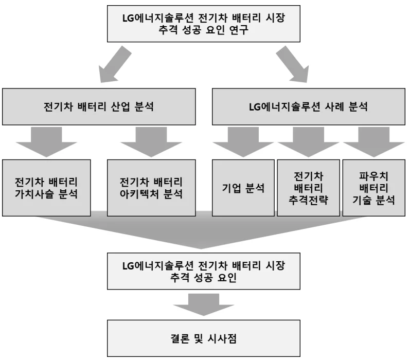
3-2 전기차 배터리 산업 분석 3-2-1 전기차 배터리 가치사슬 분석
<그림 11>은 배터리의 원자재부터 전기자동차까지 가치사슬을 나타낸다.
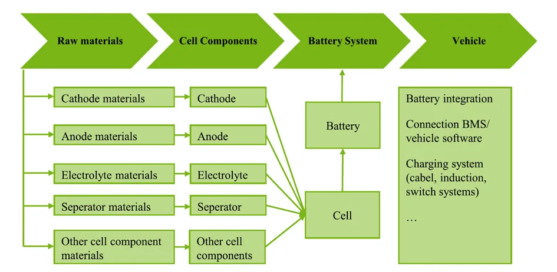
(Golembiewski, Stein, Wiemhofer, 2015) 배터리를 제조하기 위해서는 먼저 양극, 음극, 전해질, 분리막 및 기타 셀 구성 요소를 합성하기 위한 원료의 추출 및 처리로 시작된다. 그 후, 다양한 구성 요소가 배터리의 조립되고 최종적으로 전기자동차에 탑재된다. (Majeau-Bettez et al., 2011;Notter et al., 2010) 현재, 배터리 제조업체들은 양극과 음극 원재료를 소재 업체로부터 공급받아, 배터리 제조업체에서 양극과 음극을 제작하고 있으며, 전해질과 분리막 그리고 그 외 부품들은 소재업체로부터 완제품을 공급받아 조립하고 있다.
<그림 11: 전기차 배터리 가치사슬>
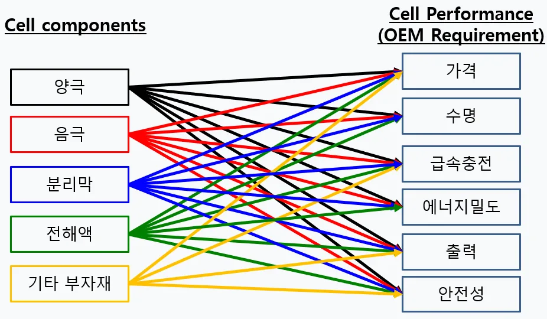
3-2-2 전기차 배터리 아키텍처 분석 이차전지의 기술을 제품관점에서 분류하게 되면 전극소재(양극, 음극), 전해질, 분리막, 집전체, 기타 부품소재(외장재)로 나눌 수 있다. (중소기업기술혁신전략로드맵 추진위원회, 2020) 배터리 제조 업체는 배터리 소재업체로부터 공급받은 양극과 음극 활물질을 바탕으로 전극을 설계하는 것과 이를 분리막, 전해액 그리고 기타 부자재들을 잘 조합하여 고객의 요구사항에 맞는 최적화된 배터리를 공급하는 것이 중요하다.
전기자동차에 탑재되는 리튬 이온 전지에 요구되는 성능으로는 가격, 수명, 급속충전, 에너지밀도, 출력, 안전성 등이 있다. (Malhotra et al. 2021)
<그림 12>과 같이 리튬 이온 전지의 제품관점에서 보았을 때 전기자동차에
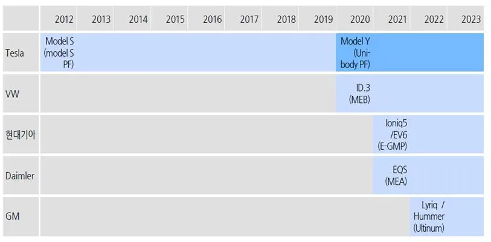
서 요구되는 리튬 이온 전지의 성능은 리튬 이온 전지의 구성 요소들이 복합적으로 작용하여 배터리의 성능(기능)을 구현한다. 따라서, 전기차 배터리의 내부 아키텍처는 Integral 형으로 볼 수 있다.
<그림 12: 전기차 배터리 제품 아키텍처>
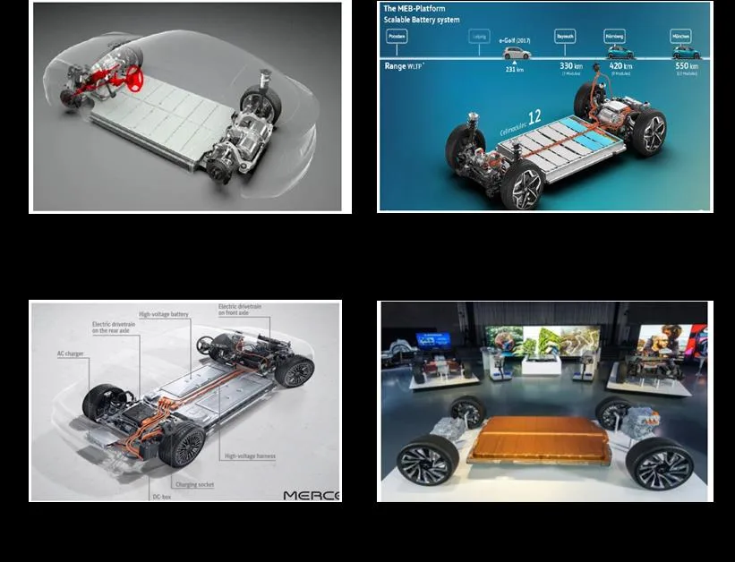
또한, 전기차 배터리의 내부 아키텍처를 배터리 제조 공정 측면에서 고려할 수 있다. <그림 8>와 같이 리튬 이온 전지를 만들기 위해서는 배터리 원재료에서부터 복잡한 공정단계를 거쳐야한다. 전극 슬러리 생산, 전극 코팅 및 롤프레스, 조립과 전해액 주액 등의 과정은 고도로 통합된 프로세스이기 때문에, 배터리 제조 공정은 integral 아키텍처라고 볼 수 있다. (Sick et al. 2018)
주요 완성차 업체들은 전기차 시장 대응전략으로 자사 차종의 모든 세그먼트에 적용할 수 있는 전기차 전용 플랫폼을 개발하는 전략을 시행하고 있다. 즉, 전기차의 핵심 부품인 배터리 시스템을 단위 부품과 시스템 단위의 모듈화 및 공용화를 통해 규모의 경제를 달성하는 전략을 수립 및 시행하고 있다. (이영국, 2022) 따라서, 전기차 제조업체의 배터리 플랫폼화 전략을 보았을 때, 전기차 배터리의 외부 아키텍처는 Modular 형이라고 볼 수 있다.
<그림 13>, <그림 14>은 각 완성차 제조 업체들이 각자 전기차 플랫폼을 개
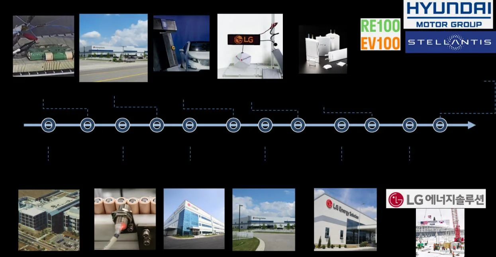
발하고 있는 것을 보여주고 있다. (이상현, 2021) 따라서, 전기차 배터리의 개방 범위를 고려했을 때, 전기차 배터리는 특정 기업 내에서 표준화되어 있지만, 동종업계 다른 회사에서는 사용할 수 없기 때문에 폐쇄형(Closed) 아키텍처라고 볼 수 있다.
<그림 13: 주요 완성차 OEM의 첫 전용 플랫폼이 탑재된 전기차 출시 시점>
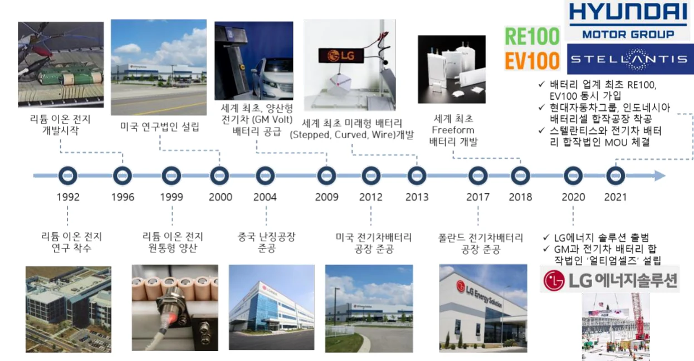
<그림 14: 주요 완성차 제조업체 전기차 플랫폼>
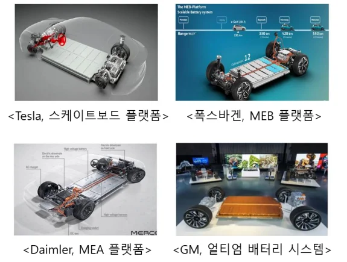
3-3 LG에너지솔루션 사례분석 3-3-1 기업분석 LG에너지솔루션은 2020년 12월 1일 ㈜LG화학에서 물적 분할되어 설립되었으며, EV, ESS, IT기기, 전동공구, LEV 등에 탑재되는 배터리 관련 제품의 연구, 개발, 제조, 판매를 하고 있는 회사다. 2021년 기준 약 17조 8,500억의 매출과 약 7,700억의 영업이익을 달성하였고, 국내와 해외에 각각 9,004명 18,619명이 재직중으로 총 27,623명의 임직원을 보유하고 있다. (LG에너지솔루션, 2022)
LG에너지솔루션의 리튬 이온 전지에 대한 연구는 1992년 당시 럭키금속에서 시작하였으며, 1996년 LG화학에 연구조직을 만들어서 본격적으로 리튬 이온 전지개발을 시작했다. 이후 3년만인 1999년에 원통형 리튬 이온 전지를 양산하는 데 성공하고, 2000년에는 북미시장 개척과 중대형 배터리에 대한 연구를 위해 미국에 연구법인인 ‘LGCPI’를 설립하였다. 2004년 중국에 난징공장을 설립하고, 2009년에는 세계 최초 양산형 전기차인 GM VOLT에 리튬 이온 전지를 단독 공급하는데 성공했다. 2012년 미국에 전기차배터리 공장을 준공하고, 2013년에 세계 최초로 Stepped, Curved, Wire 배터리 개발에 성공한다. 2017년 폴란드 전기차 배터리 공장 준공 이후, 2018년 세계 최초로 Freeform 배터리를 개발했다. 2020년 LG화학에서 물적분할 되어 LG에너지솔루션이 출범하였고, GM과 전기차 배터리 합작법인이 ‘얼티엄셀즈’를 설립한다. 2021년에도 현대자동차와 인도네시아 배터리 합작공장 착공, 스텔란티스와 전기차 합작법인 MOU체결을 진행하였고, 배터리 업계 최초로 RE100, EV100 동시가입에 성공했다. (LG에너지솔루션,2022; 김동훈, 2021; LG에너지솔루션,2021)
<그림 15: LG에너지솔루션 History>
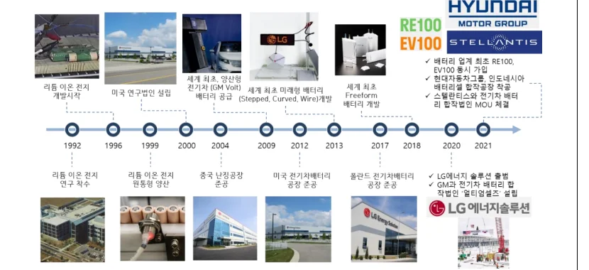
3-3-2 전기차 배터리 추격전략 LG에너지솔루션은 1999년 원통형 리튬 이온 전지 양산을 시작했고, 일본은 1991년 세계 최초로 리튬 이온 전지 상용화에 성공했다. 이 점을 보았을 때, LG에너지솔루션은 리튬 이온 전지 산업의 후발 주자로 볼 수 있다. (신우철, 2018; Stephan, Anadon, H.Hoffmann, 2021; LG에너지솔루션, n.d.)
특허인용네트워크 분석으로 리튬 이온 전지 산업 내 지식의 진화에 대해 연구한 Malhotra의 연구결과에 따르면, 1992년부터 2003년 기간 동안에 출원된 리튬 이온 전지의 특허의 상당 부분이 consumer electronics에 초점을 맞추고 있었고, 2003년 이후 전기차에 사용되는 리튬 이온 전지에 대한 특허들이 많이 출원되기 시작했다. (Malhotra, et al, 2021)
LG에너지솔루션(당시 LG화학)은 1997년 세계 최초 하이브리드 자동차인 도요타의 프리우스가 출시했을 때, 앞으로 에너지∙환경 문제가 지속적인 이슈가 될 것이라 판단해 2000년부터 자동차 배터리 연구를 시작했다.
당시 LG에너지솔루션은 리튬 이온 전지 산업 1등이었던 일본을 따라잡기 위해 1등과 전혀 다른 차별화된 기술로 추격하고자 했다. 그래서 당시 보편화된 와인딩 조립 공정으로 제작하는 원통형, 각형 배터리 개발이 아닌 파우치형 배터리 개발을 시작했다.
<그림 16: LG에너지솔루션 자동차 배터리 개발 History>
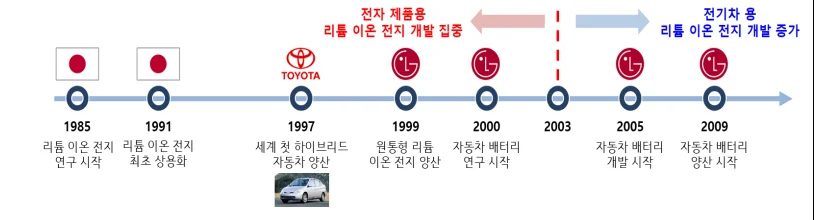
3-3-3 파우치 배터리 기술 분석 원통형, 각형, 파우치형 배터리는 각자 다른 방식으로 제조된다. 원통형과 각형 배터리는 양극과 음극, 분리막 등의 배터리 소재를 쌓아 돌돌 마는 권취(Winding)방식으로 제조하지만, 파우치형 배터리는 배터리 소재를 층층이 쌓는 적층형(Stacking)방식으로 배터리를 제조한다. (이종화, 2021; 장정훈, 이경록, 2020) <그림 17>, <그림 18>, <그림 19>는 원통형, 각형, 파우치형 배터리의 조립공정을 보여주고 있다. <그림 17>의 (b) 단계와, <그림 18>의 (a) 단계는 원통형과 각형 배터리의 권취(Winding)공정을 나타내고, <그림 19>의 (a) 단계는 파우치형 배터리의 적층(Stacking)공정을 나타낸다. (장정훈, 이경록, 2020)
<그림 17: 원통형 배터리 조립공정>
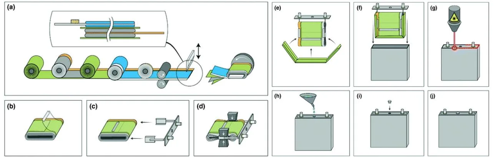
<그림 18: 각형 배터리 조립공정>
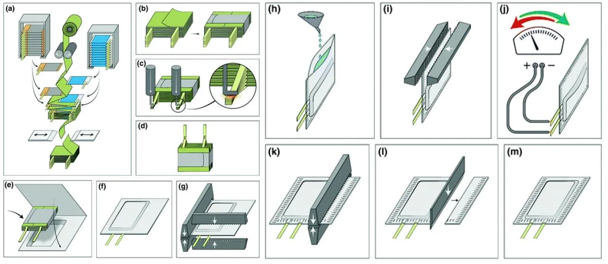
<그림 19: 파우치형 배터리 조립공정>
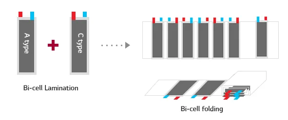
전기차용 배터리로 파우치형 배터리를 제조하는 대표적인 회사는 LG에너지솔루션과 SK ON이 있지만, 두 회사의 파우치형 배터리 조립공정 중 적층(Stacking)공정은 서로 다른 방법으로 제조한다. <그림 19>의 (a) 공정은 SK ON이 사용중인 Z-스태킹 방식이다. Z-스태킹 방식은 조립하기 전 양극과 음극을 낱장으로 재단한 후, 분리막과 번갈아 쌓는 방식이다.
LG에너지솔루션은 Lamination이라는 독자 기술을 활용 한 Lamination & Folding (Stack & Folding), Lamination & Stacking이라는 제조 방법을 사용하여 파우치형 배터리를 생산하고 있다. (장정훈, 이경록, 2020) <그림 20>은 LG에너지솔루션의 독자 기술인 Stack & Folding 제조 방식을 나타낸다. Stack & Folding 기술은 양극-분리막-음극-분리막-양극(A-Type) 또는 음극-분리막-양극-분리막-음극(C-Type)으로 구성되어 있는 Bi-cell을 제작한 후, 이를 접으면서 Full-Cell을 만들게 된다. (LG케미토피아, 2016) <그림 21>은 LG에너지솔루션의 Lamination & Stacking 방식을 보여주고 있다. Lamination & Stacking 방식도 전극과 분리막을 결합한 Bi-cell을 제작하는 것에서부터 시작한다. Stack & Folding과 다르게 분리막-양극-분리막-음극으로 구성된 Bi-cell과 분리막과 음극으로만 구성된 Half-cell을 제작하고, 이를 차례로 쌓으면서 Full-cell을 만들게 된다. (BATTERY LAB, 2022)
<그림 20: LG에너지솔루션 Stack & Folding 제조 방식>
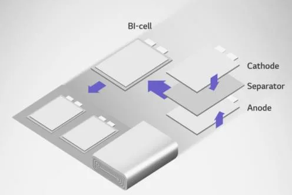
<그림 21: LG에너지솔루션 Lamination & Stacking 제조 방식>
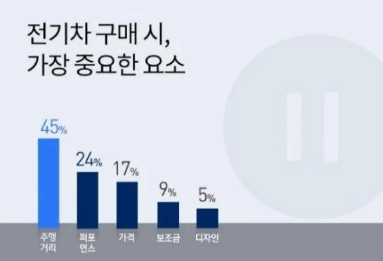
LG에너지솔루션의 Lamination 기술을 이용한 파우치형 배터리 제조 방식은 SK ON의 파우치형 제조 방식과 생산 속도 측면에서 큰 차이가 있다. SK ON이 사용중인 Z-Stacking 방식은 전극 간 접촉할 가능성이 최대한 줄어 폭발 위험이 줄어들지만, 제조과정이 복잡해 생산 속도가 느리다는 단점이 있다. (배유미, 2021) 이에 반면, LG에너지솔루션은 Lamination 공정을 통해 음극-분리막-양극을 결합한 Bi-cell을 만든 후에 Bi-cell들을 Stacking하여 배터리를 만들기 때문에 Z-stacking 공정대비 간단하고, 생산속도를 높일 수 있다. (배유미, 2021)
LG에너지솔루션은 2009년 ‘Lamination’이라는 LG에너지솔루션의 독자 기술이 적용된 파우치형 배터리 개발에 성공하여 양산을 시작했다. LG에너지솔루션의 파우치형 배터리는 원통형, 각형 배터리 및 Z-Stacking 방식으로 제작되는 파우치형 배터리 대비 여러가지 우위를 가짐으로써 중국 시장을 제외한 전세계 전기차 배터리 시장 점유율 1위를 달성한 것으로 보인다. 4-1 전기차 배터리 아키텍처 적합성 4-1-1 에너지 밀도 주행거리는 소비자들이 전기차를 구매할 때 고려하는 요소 중 가장 중요한 항목이며(현대자동차, 2020), 높은 주행거리를 위해서는 배터리의 에너지밀도를 높여야 한다. (박수진, 배창준, 2018) 따라서, 지금까지 에너지 밀도가 증가하는 방향으로 배터리가 개발되었으며, 2020년의 배터리의 에너지 밀도는 2010년 대비 거의 3배나 증가했다. (Kyle Field, 2020) 전기차 배터리의 에너지 밀도가 증가함에 따라, 전기차의 1회 충전 주행 거리 역시 점점 증가하고 있다. (현대자동차, 2019)
<그림 22: 전기차 구매시, 가장 중요한 요소>
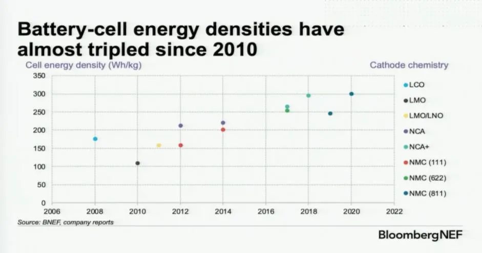
<그림 23: 연도별 배터리 에너지 밀도 증가 추이>
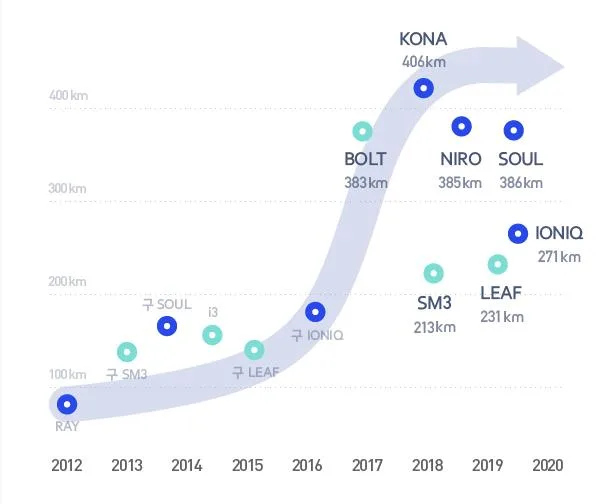
<그림 24: 연도별 전기차 1회 충전 주행거리>
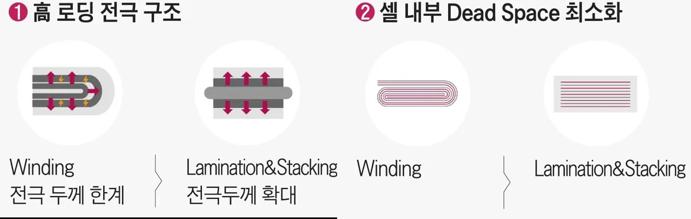
리튬 이온 전지의 에너지밀도는 양극과 음극의 용량과 두 전극의 전위 차의 의해서 결정되기 때문에, 에너지 밀도를 높이기 위해서는 단위 질량당 많은 양의 리튬을 저장할 수 있도록 전극을 설계 및 제작해야 한다. (홍지현, 2021) 높은 에너지 밀도의 배터리를 개발하기 위한 방법으로 소재적으로 접근하는 방법과 구조적으로 접근하는 방법이 있다. (박수진, 배창준, 2018) 소재적 접근 방법은 기존보다 더 높은 이론용량을 가지고 있는 양극재와 음극재를 개발하여 적용하는 방법이고, 구조적인 접근 방법은 기존 소재를 쓰되 단위면적 당 활물질의 로딩을 증가시키는 방법이 있다. (박수진, 배창준, 2018)
전지의 용량은 양극 및 음극 활물질 각각을 리튬 금속과 함께 반쪽 셀(Half-Cell)을 구성하여 결정한 개방회로 전압에서 확인할 수 있다. (박정기, 2010) 음극의 경우 처음 충전 및 방전 시 음극 표면에서 전해액의 환원에 의한 SEI 피막이 형성되고, 그로 인해 초기 비가역 용량이 생기게 된다. (박정기, 2010) 양극 역시 처음 충전할 때 리튬이 탈리되면서 양극의 구조가 변해 비가역 용량이 생기게 된다. (박정기, 2010) 이러한 양극과 음극의 초기 비가역 용량을 반영하여 전지의 용량을 설계하므로 양극과 음극의 비가역 용량을 줄이게 되면 전지의 에너지 밀도를 높이는데 유리하다. (박정기, 2010) 이 과정에서 전해액은 음극 표면에 SEI 피막이 형성되는데 영향을 주기 때문에 전지의 에너지밀도에 영향을 끼칠 수 있다.
또한, 2전지의 용량을 설계할 때 양극보다 음극의 가역용량이 커야 한다. 그 이유는 배터리 충전 시 리튬이온이 양극에서 음극으로 이동하는데, 만약 양극보다 음극의 가역용량이 작으면, 충전할 때 음극에 리튬석출(deposition)이 발생하여, 양극과 음극 사이에 있는 분리막을 찢어 안전성의 문제가 발생할 수 있기 때문이다. (박정기, 2010) 따라서, 소재적 접근방법으로 전지의 에너지 밀도를 높이기 위해서는 양극과 음극의 용량을 함께 올려야 한다.
마지막으로 전지의 에너지 밀도를 높이기 위해 단위면적 당 활물질의 로딩을 증가시키는 경우 여러가지 요소를 고려해야한다. 먼저, 전지의 크기가 정해져 있기 때문에 전지의 두께에 한계가 있다. 로딩을 올리고 두께를 낮추게 되면 전극밀도가 올라가게 되고 이는 전해액을 주액하는 데 영향을 주기 때문에 적절히 설정해야 한다. (박정기, 2010) 적절한 전극밀도를 유지하면서 전극의 단위면적 당 활물질 로딩을 증가시키기 위해서는 내부 공간을 확대하는 것이 필요하며, 대표적인 방법으로 분리막의 두께를 얇게 제작하여 내부 공간을 확대하는 방법이 있다.
이와 같이 리튬 이온 전지의 에너지 밀도는 양극, 음극, 분리막, 전해액을 모두 고려해야하는 복잡한 Integral 아키텍처의 특성을 지니고 있다.
LG에너지솔루션의 파우치 배터리는 권취(Winding)방식으로 제작하는 원통형/각형 배터리보다 에너지 밀도를 높이는데 구조적인 측면에서 장점이 있다. 권취(Winding)방식으로 제작되는 원통형과 각형 배터리는 제조 특성상 곡률이 존재하여 굽힘 응력과 같은 복잡한 기계적 응력을 받게 되고, 이로 인해 전극 및 foil에 손상이 발생할 수 있기 때문에 전극의 로딩과 두께를 올리는데 한계가 있다. (Schilling. et al, 2016) 반면의 LG에너지솔루션의 중대형 파우치 배터리는 Stacking 방식으로 전극을 위로 쌓기 때문에 굽힘 응력이 작용하지 않아 로딩과 두께를 올리는데 용이하다. (송혜진, 2021; Schilling. et al, 2016)
또한, 권취(Winding)방식으로 제작되는 배터리는 모서리나 Core 부분의 빈공간에 존재하지만, Stacking 방식으로 제작하는 LG에너지솔루션의 중대형 파우치 배터리는 셀 내부에 Dead Space를 최소화함으로써 에너지 밀도를 높이는데 강점이 있다. (박찬길, 2018; 송혜진, 2021)
<그림 25: LG에너지솔루션 파우치 배터리 – 에너지 밀도 측면>
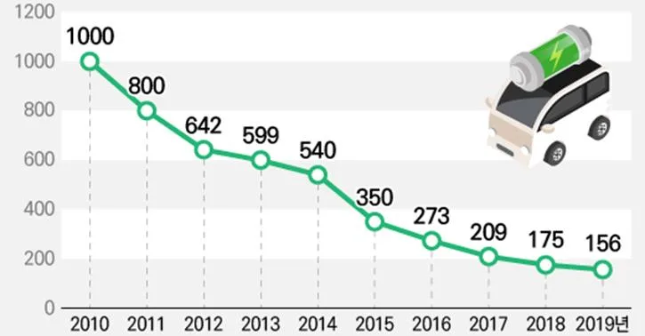
4-1-2 생산성 전기차 내에서 가장 큰 비용을 차지하는 배터리의 높은 가격이 전기자동차 시장의 대중화를 방해하고 있다. (International Energy Agency, 2019, Reinhardt et al., 2016) 따라서, 완성차 업체들은 전기차가 기존 내연자동차보다 비용 경쟁력을 갖추기 위해 배터리 가격 인하를 요구하고 있으며(Reinhardt et al., 2019a), 그에 따라 <그림 26>와 같이 2010년부터 2019년까지 전기차 배터리 팩의 평균 가격은 꾸준히 감소하고 있다. (최형균, 2020)
<그림 26: 전기차 배터리팩 연간 평균가 추이, 단위 $/kWh>
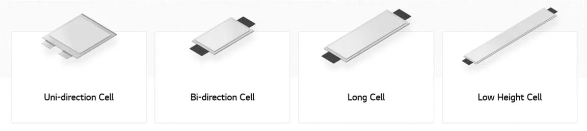
배터리 가격을 줄이는 방법은 배터리 원재료 가격을 줄이는 방법 이외에도 규모의 경제를 활용하여 전기차 배터리 비용을 줄일 수 있다. (B.Nykvist, M.Nilsson, 2015)
파우치형 배터리의 제조 특성상, 원통형/각형 배터리보다 생산 난이도와 비용이 높을 수밖에 없다. (전창현, 2021) 하지만 LG에너지솔루션은 Lamination 기술을 활용한 제조 방식을 통해 배터리 생산 속도를 높여 이를 극복하고자 하였다. 그 결과 Z-Stacking으로 제작되는 파우치 배터리보다 생산 속도가 빠르기 때문에 CAPA 및 규모의 경제 측면에서 우위를 가져갈 수 있다. 4-1-3 다양한 배터리 디자인 전기차 배터리 산업의 Integral Inside – Closed Modular Outside 아키텍처 특성 상 배터리 제조 업체들은 다양한 전기차 제조업체에 대응하는 것이 중요하다.
<그림 13, 14>에서 볼 수 있듯이 각 전기차 제조업체들은 각자의 전기차 배터
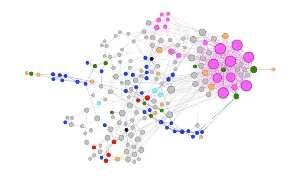
리 플랫폼을 만들고 있기 때문에 이에 적합한 배터리를 탑재하는 것이 필요하다. (이상현, 2021) 또한, 완성차 OEM들은 전기차의 주행거리와 급속충전 성능 향상을 위해 차량의 특성에 맞는 다양한 배터리 스펙을 요구한다. (최보영, 이수림, 2022)
원통형과 각형 배터리는 규격과 디자인이 정해져 있어서 각 전기차 제조사가 요구하는 규격을 맞추는 것이 어렵지만, 파우치형 배터리는 다양한 형태의 배터리 배터리를 디자인할 수 있다. (신수용, 2023) LG에너지솔루션은 이러한 파우치 배터리의 특징을 살려 <그림 27>과 같이 각 전기차 제조사에서 요구하는 형태의 배터리를 개발하여 공급했다. (LG에너지솔루션, n.d.)
<그림 27: LG에너지솔루션 중대형 파우치 배터리 종류>
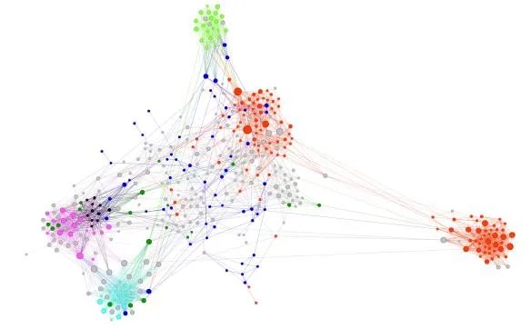
4-2 제조 기술 전유성 확보 LG에너지솔루션의 파우치형 배터리는 와인딩 방식으로 제작하는 원통형, 각형 배터리보다 에너지 밀도를 높이는데 장점이 있고(박찬길, 2018; 송혜진, 2021), 다양한 배터리 형태를 디자인하여 각 전기차 제조사에서 요구하는 배터리를 공급할 수 있다는 장점이 있다. (신수용, 2023) 하지만, 원통형, 각형 배터리보다 생산 난이도가 높기 때문에 파우치형 배터리 제조 기술을 확보하는 것이 중요하다. 따라서 각 기업들의 배터리 제조 기술동향을 파악하기 위해 특허 인용 네트워크 분석을 진행했다. 특허 인용 네트워크는 특정 기술군의 동향 파악이나 특허의 가치를 평가하기 위한 중심도 지표에 대한 분석에 활용된다. (Lee. et al. 2016) 특허 인용 네트워크에서 점(node)는 특허에 해당하고 선(edge)는 인용 관계에 해당한다. (윤민호, 2011)
<표3>는 연도별 배터리 제조 기술 특허 인용 네트워크를 나타낸 것으로, 점
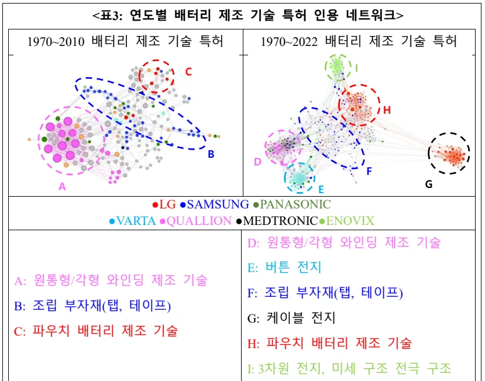
(Node)의 크기는 특허 피인용 수에 비례하게 설정하였고, 점(Node)의 색은 출원기업에 따라 다르게 구분하였다. 1970~2010년도 네트워크 내 A 그룹은 와인딩 관련된 특허들이고 QUALLION社사의 특허들이 높은 피인용을 보여주고 있다. B 그룹은 배터리의 조립 부자재인 탭, 테이프와 관련된 특허들로 삼성에서는 당시 해당 분야 특허들을 주로 개발하였다. C 그룹은 파우치형 배터리 제조 기술인 Stacking, Lamination 관련 특허로 LG에너지솔루션이 해당 분야에서 먼저 기술을 확보하여 특허를 출원하였지만, 당시 클러스터를 형성할 정도로 영향력은 크지 않았다. 1970~2022년 사이 배터리 제조 기술 특허의 네트워크는 크게 6개의 기술군으로 나눌 수 있다. D 그룹은 기존 A 그룹이었던 원통형, 각형 제조 방식인 와인딩 관련된 특허들로 QUALLION社와 MEDTRONIC社가 주요 특허를 확보하고 있다. H 그룹은 기존 C 그룹이었던 파우치 배터리 제조 기술인 Stacking, Lamination 관련 특허들로 네트워크 내에서 특허 클러스터를 형성하고 있다. 해당 클러스터에서는 LG에너지솔루션의 특허들이 대부분 차지하고 있으며 높은 피인용 수를 가지고 있다.
<표3: 연도별 배터리 제조 기술 특허 인용 네트워크>
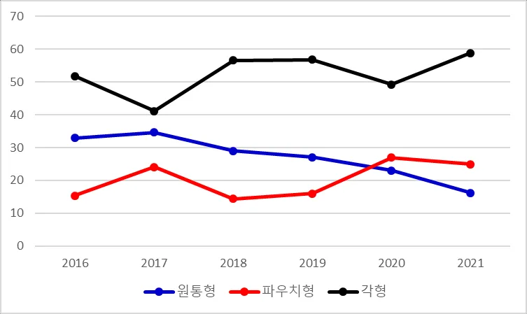
2022년 기준 파우치 배터리 제조 기술 특허는 LG에너지솔루션이 43%로 가장 많은 비율을 차지하고 있으며, 이어서 SAMSUNG이 12%를 차지하고 있다. 또한, 파우치 배터리 제조 기술 특허 내 피인용 수가 높은 상위 10개의 특허를 확인한 결과, LG에너지솔루션의 특허가 대다수를 차지하고 있다.
<그림 28: 파우치 배터리 제조 기술 특허 출원 기업 비율, 1970~2022>
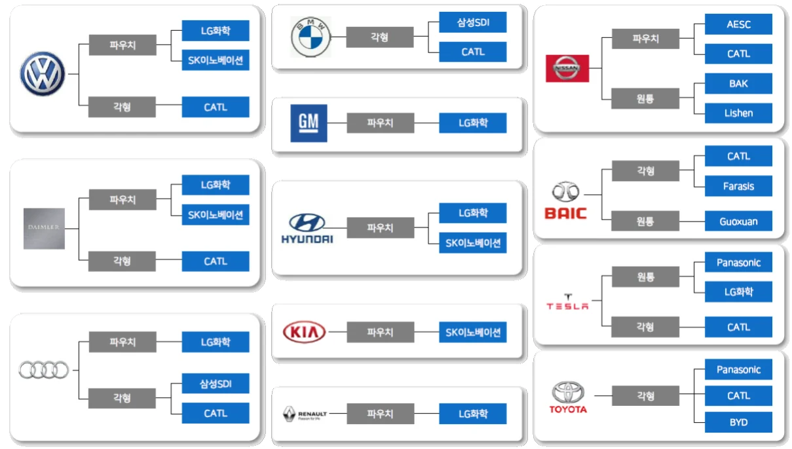
<표4: 파우치 배터리 제조기술 특허內 상위 피인용 수 특허 10개>
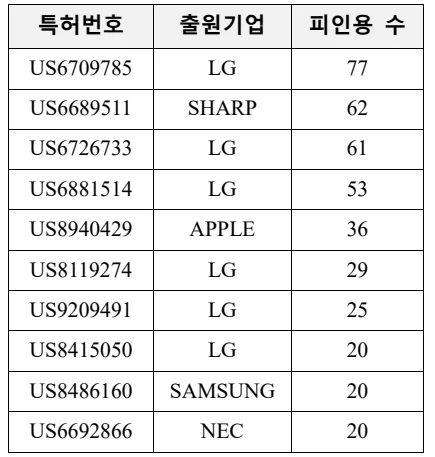
LG에너지솔루션이 파우치형 배터리 제조 기술과 관련된 가장 많은 특허 수와 피인용 수가 높은 주요 특허를 확보하고 있는 것을 보았을 때, 파우치형 배터리 제조 기술의 전유성을 확보하고 있는 것으로 보인다. 4-3 성공요인 종합 연구결과를 종합했을 때, LG에너지솔루션은 전기차 배터리 아키텍처에 유리한 파우치형 배터리를 개발함으로써 전기차 배터리 시장에서 추격에 성공한 것으로 보인다. 현재 글로벌 전기차 시장에서 각형 배터리가 가장 많이 탑재되고 있으며 파우치형 배터리가 그 뒤를 잇고 있다. (SNE Research, n.d.) 각형 배터리의 탑재 비율이 높은 이유는 중국에서 대부분 각형 배터리를 탑재하고 있기 때문이며, 유럽과 미국 시장만을 고려했을 때는 달라질 수 있다. (박서형, 2022) 2019년까지 파우치형 배터리의 전기차 탑재 비율은 원통형 배터리에 뒤쳐졌지만, 파우치형 배터리 시장 수요가 증가하면서 2020년부터 원통형 배터리보다 더 많이 탑재되고 있다. 또한, 주요 전기차 제조업체에서 탑재하는 배터리 유형을 보았을 때, 12곳의 기업 중 8개 기업이 파우치형 배터리를 사용하고 있는 것을 보았을 때 파우치형 배터리의 수요가 점점 증가하고 있다고 볼 수 있다. (메리츠증권, 2020)
<그림 29: 글로벌 전기차 유형별 배터리 탑재 비율>
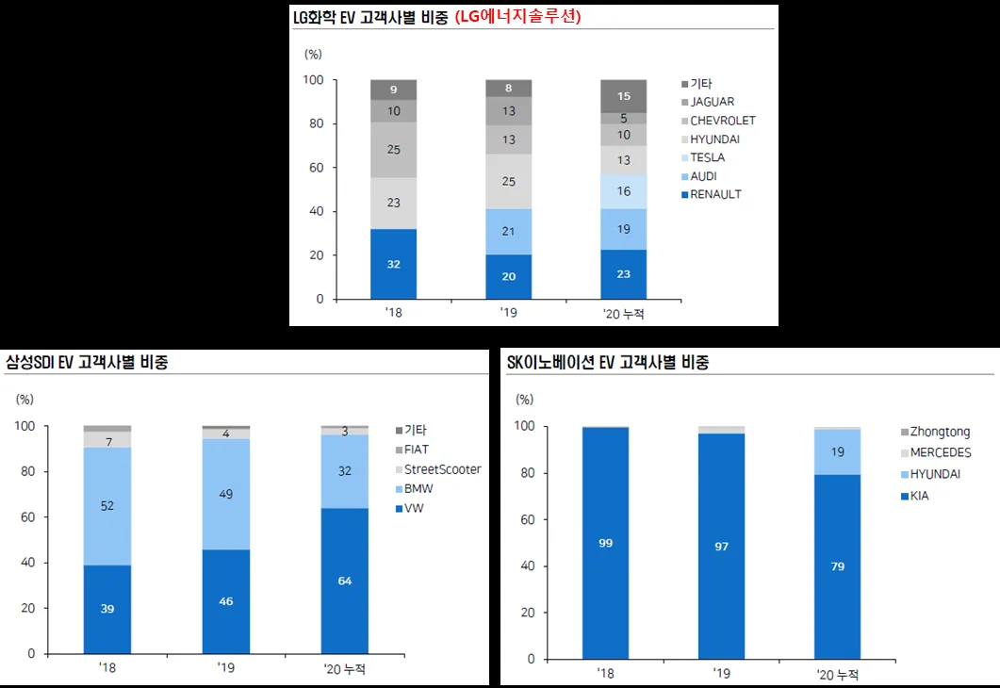
<그림 30: 주요 전기차 OEM별 배터리 공급망 현황>
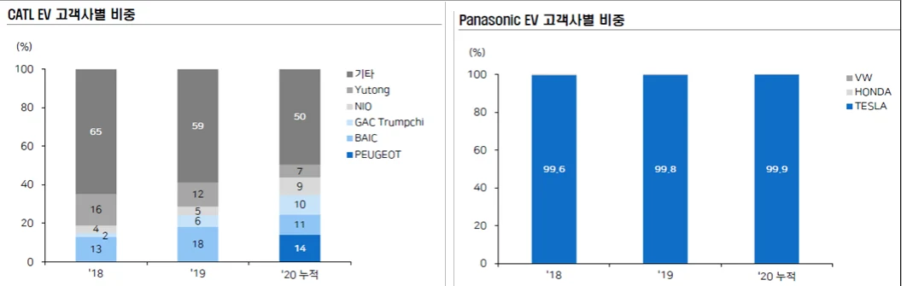
아직 전기차 시장의 초기 단계라 원통형, 각형, 파우치형 배터리 중에서 향후 어떤 배터리가 대세가 될지 예측하기는 어렵다. (박서형, 2022) 하지만, 파우치형 배터리를 탑재하는 전기차가 많아지는 것을 보았을 때, 파우치형 배터리가 전기차 배터리 아키텍처에 유리하여 전기차 제조업체에서 사용하는 것으로 보인다. 이런 시장 상황에서 LG에너지솔루션은 확보한 파우치형 배터리 제조 기술을 바탕으로 산업내 여러 완성차 업체에 대응하는데 성공하여 이들과 협력 관계를 구축하고 있다. (최보영, 이수림, 2022)
그림 31: 전기차 제조업체와 배터리 제조업체의 관계>
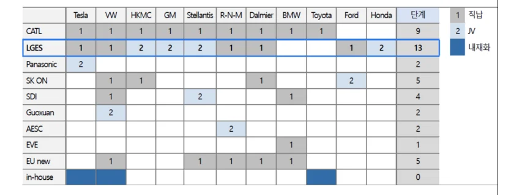
<그림 32: 각 배터리 제조업체의 EV 고객사 별 비중>
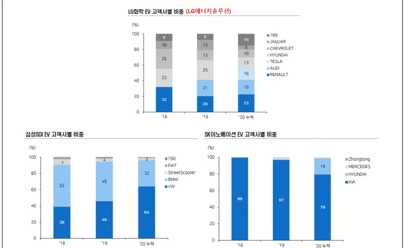
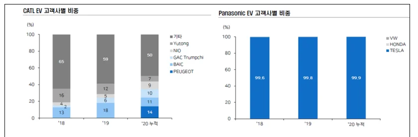
그림 31: 전기차 제조업체와 배터리 제조업체의 관계>
5장. 결론 및 시사점
본 사례연구에서는 리튬 이온 전지 산업에 후발주자인 LG에너지솔루션이 중국을 제외한 세계 전기차 배터리 시장 점유율 1위를 달성할 수 있었던 원인에 대해 연구했다. LG에너지솔루션의 전기차 배터리 시장 추격 성공 요인을 분석하기 위해 전기차 배터리 산업과 LG에너지솔루션의 사례를 분석했다. 전기차 배터리 산업 분석 측면에서 가치사슬과 아키텍처를 분석했고, LG에너지솔루션의 사례 분석 측면에서는 기업 분석, 전기차 배터리 추격전략, 파우치 배터리 기술 분석을 진행했다. 연구 결과는 다음과 같다. 전기차 배터리 산업의 아키텍처는 Integral Inside – Closed Modular Outside의 형태로, 모든 기업들이 전기차 배터리를 공용으로 사용할 수 없기 때문에 산업내 여러 생산자를 대응하는 것이 중요하다. 전기차 제조업체는 자신의 차량 플랫폼에 적합한 저렴하고 높은 에너지 밀도를 가진 배터리를 요구하고 있으므로 배터리 제조업체는 이를 만족하는 배터리를 개발하는 것이 필요하다. LG에너지솔루션은 리튬 이온 전지 산업의 선발 주자였던 일본 기업을 따라잡기 위해서 자본력을 통한 가격 경쟁이 아닌 차별화 전략을 선택했다. 따라서, 당시 보편화 된 와인딩 방식으로 제작하는 원통형, 각형 배터리가 아닌 파우치형 배터리를 개발했다. LG에너지솔루션의 파우치형 배터리는 원통형, 각형 배터리 대비 높은 에너지 밀도를 구현할 수 있고, 다양한 디자인으로 완성차 업체에게 제공할 수 있다는 강점이 있다. 또한, 독자 기술인 Lamination을 적용한 제조 방법을 통해 파우치형 배터리의 단점인 느린 생산 속도를 보완했고, 이러한 제조 기술을 특허를 통해 전유성을 확보했다. 그 결과, LG에너지솔루션은 뛰어난 파우치형 배터리 제조 기술을 바탕으로 다양한 전기차 제조업체와 협력 관계를 구축하고 있다. 본 사례 연구는 리튬 이온 전지 산업의 후발주자인 LG에너지솔루션이 다양한 완성차 업체에 대응해야 하는 전기차 배터리 산업의 아키텍처에 유리한 파우치형 배터리 개발을 먼저 시작하고, 제조 기술의 대한 전유성을 특허로 확보함에 따라 전기차 배터리 시장에서 추격을 성공한 것에 의미가 있다. 최근, 파우치형 배터리를 탑재하는 전기차 제조사들이 많아지고 있는 상황에서 현재 이수요를 대응할 수 있는 기업은 LG에너지솔루션 밖에 없기 때문에 앞으로 지속 성장할 것으로 예상된다. 그러나 본 연구에서는 LG에너지솔루션의 전기차 배터리 시장 추격 성공요인으로 파우치 배터리 개발만 다뤘다는 한계가 있다. LG에너지솔루션은 화학기업인 LG화학에서부터 배터리 사업을 시작하였고, 이는 전자회사에서 배터리 사업을 시작한 일본 기업과 차이가 있다. LG에너지솔루션은 LG화학이 이전에 화학산업에서 쌓은 소재에 대한 역량을 바탕으로 배터리 소재에 대한 연구에 집중하였고, 그 결과 세계 최초로 높은 에너지 밀도를 지닌 NCM 811 양극재와 NCMA 양극재를 적용한 배터리 개발에 성공했다. 또한, 리튬 이온 전지에서 양극과 음극의 단락 방지 역할을 하는 분리막 원단에 세라믹을 코팅하여 열적 기계적 강도를 높인 분리막을 개발하여 배터리의 안전성을 강화하였다. 이처럼, LG에너지솔루션의 소재역량이 LG에너지솔루션의 전기차 배터리 시장 추격하는데 어떤 영향을 미쳤는지 추가 연구할 필요가 있다.
Reference
논문 1) 곽기호. (2019). 자동차 아키텍처의 모듈화: 승용차 사례를 중심으로. 기술혁 신연구, 27(2), 37-71. 2) 박수진, & 배창준. (2018). 전극구조설계 기반 고에너지밀도· 고속충전 리튬 이온배터리 제작. 세라미스트, 21, 406-415. 3) 박진한. (2022). 극한 기후 현상의 증가로 인한 기후위기. FUTURE HORIZON, (53), 15-22. 4) 윤민호. (2011). DRAM 산업의지식확산, 기술궤적과 산업 주도권의 이동: 특 허인용 네트워크 분석과 신슘페터주의 기술경제학. 지식재산연구, 6(3), 239- 270. 5) 장찬희, & 이재천. (2018). 전기자동차 리튬이온 배터리 제조공정에서 Loading Level 산포최소화 코팅을 통한 전극 품질개선에 관한 연구. 한국산 학기술학회 논문지, 19(3), 14-20. 6) Fujimoto, T. (2002, November). Architecture, capability, and competitiveness of firms and industries. In Saint-Gobain Centre for Economic Research 5th Conference, Paris, FR, November (Vol. 204). 7) Fujimoto, T. (2007). Monozukuri Keieigaku [Business Administration of Manufacturing]. Tokyo: Kobunsha. 8) Golembiewski, B., Vom Stein, N., Sick, N., & Wiemhöfer, H. D. (2015). Identifying trends in battery technologies with regard to electric mobility: evidence from patenting activities along and across the battery value chain. Journal of Cleaner Production, 87, 800-810. 9) Herbert A. Simon Proceedings of the American Philosophical Society, Vol. 106, No. 6. (Dec. 12, 1962), pp. 467-482. 10) Hong, J. (2021). Chemical Prelithiation Toward Lithium-ion Batteries with Higher Energy Density. Journal of the Korean Electrochemical Society, 24(4), 77-92. 11) Lee, M., Kim, Y., & Jang, W. (2016). Patent citation network analysis. The Korean Journal of Applied Statistics, 29(4), 613-625. 12) Majeau-Bettez, G., Hawkins, T. R., & Strømman, A. H. (2011). Life cycle environmental assessment of lithium-ion and nickel metal hydride batteries for plug- in hybrid and battery electric vehicles. Environmental science & technology, 45(10), 4548-4554. 13) Malhotra, A., Zhang, H., Beuse, M., & Schmidt, T. (2021). How do new use environments influence a technology's knowledge trajectory? A patent citation 37 network analysis of lithium-ion battery technology. Research Policy, 50(9), 104318. 14) Notter, D. A., Gauch, M., Widmer, R., Wager, P., Stamp, A., Zah, R., & Althaus, H. J. (2010). Contribution of Li-ion batteries to the environmental impact of electric vehicles. 15) Nykvist, B., & Nilsson, M. (2015). Rapidly falling costs of battery packs for electric vehicles. Nature climate change, 5(4), 329-332. 16) Reinhardt, R., García, B. A., Casals, L. C., & Domingo, S. G. (2016, June). Critical evaluation of European Union legislation on the second use of degraded traction batteries. In 2016 13th International Conference on the European Energy Market (EEM) (pp. 1-5). IEEE. 17) Reinhardt, R., Amante García, B., Canals Casals, L., & Gassó Domingo, S. (2019). A critical evaluation of cathode materials for lithium-ion electric vehicle batteries. Project Management and Engineering Research, 99-110. 18) Schilling, A., Schmitt, J., Dietrich, F., & Dröder, K. (2016). Analyzing Bending Stresses on Lithium‐Ion Battery Cathodes induced by the Assembly Process. Energy Technology, 4(12), 1502-1508. 19) Shibata, T., Yano, M., & Kodama, F. (2005). Empirical analysis of evolution of product architecture: Fanuc numerical controllers from 1962 to 1997. Research Policy, 34(1), 13-31. 20) Sick, N., Bröring, S., & Figgemeier, E. (2018). Start-ups as technology life cycle indicator for the early stage of application: An analysis of the battery value chain. Journal of cleaner production, 201, 325-333. 21) Stephan, A., Anadon, L. D., & Hoffmann, V. H. (2021). How has external knowledge contributed to lithium-ion batteries for the energy transition?. Iscience, 24(1), 101995. 22) Ulrich, K. (1995). The role of product architecture in the manufacturing firm. Research policy, 24(3), 419-440. 보고서 1) 교보증권. (2022). LG에너지솔루션 기업분석. https://ssl.pstatic.net/imgstock/upload/research/company/1653953745060.pdf 2) 메리츠증권. (2020). Who’s the next Merck/UDC?. http://home.imeritz.com/include/resource/research/WorkFlow/20200510182748101K _02.pdf 3) 삼성증권, 장정훈 & 이경록. (2020). 산업분석 7편 – 글로벌 배터리 공급 캐파와 제조공정 https://www.samsungpop.com/common.do?cmd=down&saveKey=research.pdf&file Name=2020/2020090109401690K_02_12.pdf&contentType=application/pdf 4) 연구개발특구진흥재단. (2021). 글로벌 시장동향보고서 – 전기자동차 배터 38 리 시장. https://www.innopolis.or.kr/board/view?pageNum=20&rowCnt=10&no1=763&linkI d=45235&menuId=MENU00999&schType=0&schText=&boardStyle=&categoryId =&continent=&country= 5) 중소벤처기업부. (2020). 중소기업 기술혁신 전략 로드맵 2020. https://kamp.kaist.ac.kr/resources/default/data/%EC%A4%91%EC%86%8C%EA% B8%B0%EC%97%85_%EA%B8%B0%EC%88%A0%ED%98%81%EC%8B%A0_ %EC%A0%84%EB%9E%B5_%EB%A1%9C%EB%93%9C%EB%A7%B5_2020.p df 6) 한국무역협회, 손창우. (2020). 한∙중∙일 배터리 삼국지와 우리의 과제. https://eiec.kdi.re.kr/policy/domesticView.do?ac=0000153667&issus=S&pp =20&datecount=&pg= 7) 한국무역협회, 김꽃별. (2022). 코로나 이후 주요국의 전기차 시장 동향. https://www.kita.net/cmmrcInfo/internationalTradeStudies/researchReport/focusBrief Detail.do?no=2341&Classification=7 8) 한국은행, 장병훈 & 배기원. (2022). 글로벌 친환경차 시장 동향 및 특징. https://www.bok.or.kr/portal/bbs/P0000528/view.do?nttId=10069005&menuNo=200 434&pageIndex=1 9) 한국환경정책평가연구원, 조지혜, 주현수, 이소라 & 김유선. (2017) 이차전 지의 폐자원흐름 분석 및 자원순환성 제고 방안. https://www.kei.re.kr/elibList.es?mid=a10101000000&elibName=researchreport&c_ id=715828&act=view 10) IBK투자증권, 신우철. (2018). 2차전지/전자부품 연금술사. http://file.mk.co.kr/imss/write/20181130113048__00.pdf 11) IBK투자증권, 이상현. (2021). 현대차:2030 모빌리티 중심에 서다. https://www.ibks.com/company/common/download.jsp?filepath=/files/tradeinfo/indr eport&filename=20210523223708690_ko.pdf 12) IBK투자증권, 전창현. (2021). 2차전지 거인의 어깨. https://ssl.pstatic.net/imgstock/upload/research/industry/1621811606102.pdf 13) KDI미래전략연구소, 조윤상, 하태원 & 정승원. (2019) 리튬 이차전지 시장 및 기술동향 분석과 대응방향. https://eiec.kdi.re.kr/policy/domesticView.do?ac=0000148334 14) KDI미래전략연구소, 신유리 (2021). 전기차용 이차전지의 시장 트렌드 및 39 기술 개발 동향. https://eiec.kdi.re.kr/policy/domesticView.do?ac=0000159205&issus=S&pp=20&dat ecount=&pg= 15) LG에너지솔루션. (2022). LG에너지솔루션 반기보고서. https://dart.fss.or.kr/dsaf001/main.do?rcpNo=20220816002372 16) LG에너지솔루션. (2022). LG에너지솔루션 회사소개서 https://www.lgensol.com/assets/file/2022_company_profile_KO.pdf 17) Project Management Institute. (n.d.). Global Mega Trends 2022. https://www.pmi.org/-/media/pmi/documents/public/pdf/learning/thought- leadership/pmi-megatrends- 2022.pdf?rev=087ea6f24b62411bb5a42dcce4a6739f&sc_lang_temp=en 웹페이지 1) 김광주. (n.d.). SNE Research CEO Message. SNE Research, https://www.sneresearch.com/kr/about/ceo 2) 김동훈. (2021년 10월 12일). [K-퍼스트무버]LG배터리①흑역사로 피운 꽃. Business watch. http://news.bizwatch.co.kr/article/industry/2021/10/06/0024 3) 박찬길. (2018년 2월 1일). 삼성SDI, 자동차용 배터리 세대별 기술 로드맵 확정. KIPOST. https://www.kipost.net/news/articleView.html?idxno=1139 4) 배유미. (2021년 10월 15일). LG엔솔과 SK이노의 셀 공정법, 무엇이 다른가. Byline Network. https://byline.network/2021/10/14-175/ 5) 삼성SDI. (n.d.). 삼성SDI 기업 연혁. 삼성SDI https://www.samsungsdi.co.kr/about-sdi/history.html 6) 송혜진. (2021년 6월 30일). ‘라미&스택’ 제조 공법으로 2mm 초슬림 배터리 구현. 조선일보. https://www.chosun.com/economy/industry- company/2021/06/30/FOQZQNDKCVDN7MH63JNQIKK25E/ 7) 이영국. (2022년 8월 21일). 전기차 및 전동화 부품 개발 동향. 한국자동차 기자협회. https://www.kaja.org/1458275600/?idx=12644235&bmode=view 8) 이종화. (2021년 3월 26일). 각형 파우치형 원통형∙∙∙배터리 모양 전쟁 불붙 었다. 매일경제. https://www.mk.co.kr/news/it/9805423 9) 최형균. (2020년 7월 6일). 전기차 가격, 언제쯤 ‘확’ 떨어질까. BUSINESS WATCH. http://news.bizwatch.co.kr/article/industry/2020/07/02/0023 40 10) 현대자동차. (2019년 9월 6일). 전기차는 왜 대세가 됐나?. HYUNDAI MOTOR GROUP TECH. https://tech.hyundaimotorgroup.com/kr/article/will-electric-cars-dominate/ 11) 현대자동차. (2020년 6월 23일). 1회 충전으로 더 멀리 가는 현대∙기아 전기 차의 비결. HYUNDAI MOTOR GROUP TECH. https://tech.hyundaimotorgroup.com/kr/article/one-charge-longer-range-hyundai-and- kia-evs-latest-evolution/ 12) Battery LAB. (2022년 4월 12일). 전지전능한 전지 이야기 – 배터리 만들기 Step1. 전극 공정편. BATTERY INSIDE. https://inside.lgensol.com/2022/04/%ec%a0%84%ec%a7%80%ec%a0%84%eb%8a %a5%ed%95%9c-%ec%a0%84%ec%a7%80-%ec%9d%b4%ec%95%bc%ea%b8%b 0-%eb%b0%b0%ed%84%b0%eb%a6%ac-%eb%a7%8c%eb%93%a4%ea%b8%b0- step1-%ec%a0%84%ea%b7%b9-%ea%b3%b5/ 13) Battery LAB. (2022년 7월 7일). 전지전능한 전지 이야기 – 배터리 만들기 Step2. 조립공정 편. BATTERY INSIDE. https://inside.lgensol.com/2022/07/%EC%A0%84%EC%A7%80%EC%A0%84%EB %8A%A5%ED%95%9C-%EC%A0%84%EC%A7%80-%EC%9D%B4%EC%95% BC%EA%B8%B0-%EB%B0%B0%ED%84%B0%EB%A6%AC-%EB%A7%8C% EB%93%A4%EA%B8%B0- step2-%EC%A1%B0%EB%A6%BD-%EA%B3%B5%EC%A0%95/ 14) Battery LAB. (2022년 7월 15일). 전지전능한 전지 이야기 – 조립 공정 속 공정: 파우치 배터리 2편(라미네이션 & 스태킹). BATTERY INSIDE. https://inside.lgensol.com/2022/07/%EC%A0%84%EC%A7%80%EC%A0%84%EB %8A%A5%ED%95%9C-%EC%A0%84%EC%A7%80-%EC%9D%B4%EC%95% BC%EA%B8%B0-%EC%A1%B0%EB%A6%BD-%EA%B3%B5%EC%A0%95-% EC%86%8D-%EA%B3%B5%EC%A0%95-%ED%8C%8C%EC%9A%B0%EC%B 9%98-2/ 15) Battery LAB. (2022년 7월 26일). 전지전능한 전지 이야기 – 배터리 만들기 Step3. 활성화 공정 편. BATTERY INSIDE https://inside.lgensol.com/2022/07/%ec%a0%84%ec%a7%80%ec%a0%84%eb%8a %a5%ed%95%9c-%ec%a0%84%ec%a7%80-%ec%9d%b4%ec%95%bc%ea%b8%b 0-%eb%b0%b0%ed%84%b0%eb%a6%ac-%eb%a7%8c%eb%93%a4%ea%b8%b0- step3-%ed%99%9c%ec%84%b1%ed%99%94-%ea%b3%b5/ 16) International Energy Agency(IEA). (2019년 5월). Global EV Outlook 2019. IEA. https://www.iea.org/reports/global-ev-outlook-2019 41 17) James Temple. (2021년 3월 10일). 리튬금속 배터리, 전기차 전환 앞당긴다. MIT Technology Review. https://www.technologyreview.kr/lithium-metal-batteries-electric-vehicle-car/ 18) Kyle Field. (2020년 2월 19일). BloombergNEF: Lithium-Ion Battery Cell Densities Have Almost Tripled Since 2010. CleanTechnica. https://cleantechnica.com/2020/02/19/bloombergnef-lithium-ion-battery-cell- densities-have-almost-tripled-since-2010/ 19) LG에너지솔루션. (2021년 1월 20일). 최초, 최고, 최다∙∙∙ 회사 역사가 세계 배터리 산업의 역사. 조선일보. https://www.chosun.com/special/future100/fu_general/2021/01/20/UK7F7AJEWVG GVCYHRKCSP27JLI/ 20) LG에너지솔루션. (n.d.). LG에너지솔루션 기업 연혁. LG에너지솔루션 https://www.lgensol.com/kr/company-history 21) LG케미토피아. (2016년 6월 30일). 동전만큼 얇은 배터리 - HP Spectre. LG케 미토피아. https://blog.lgchem.com/2016/06/hp-spectre/ 22) Skinno News. (2021년 6월 17일). 각형, 원통형, 파우치형∙∙∙형태에 따른 전기 차 배터리 특성. SK이노베이션 전문 보도채널. https://skinnonews.com/archives/84588 23) Wikipedia. (n.d.). CATL. Wikipedia. https://www.technologyreview.kr/lithium-metal-batteries-electric-vehicle-car/ 24) 이홍석. (2017년 2월 13일). BYD, 파나소닉 제치고 전기차 배터리 출하량 1 위. 데일리안. https://m.dailian.co.kr/news/view/612290 25) 오소영. (2018년 2월 13일). EU∙中∙韓 배터리 시장 각축전… CATL, 생산능력 LG화학∙파나소닉 제친다?. 글로벌이코노믹. https://cmobile.g- enews.com/article/Industry/2018/02/20180212144328108296aa5dcdf1_1?md=20180 213152157_V 26) 양대규. (2019년 2월 8일). 2018년 전기차 배터리 사용량 CATL 1위…”중국 강세 거세져”. TECHWORLD. https://www.epnc.co.kr/news/articleView.html?idxno=82369 27) 강민성. (2020년 2월 10일). 국내 배터리 3사, 글로벌시장 점유율 15%∙∙∙LG 화학 3위. 이코노믹 리뷰. 42 https://www.econovill.com/news/articleView.html?idxno=385140 28) 송정은. (2021년 2월 1일). 작년 전기차 배터리 사용량 1위 CATL…국내 3 사, 독보적 성장세. KIPOST. https://www.kipost.net/news/articleView.html?idxno=207128 29) 김철선. (2022년 2월 7일). 작년 전기차 배터리 한국 점유율 30.4%...중국 부 상에 소폭 하락. 연합뉴스. https://www.yna.co.kr/view/AKR20220207048500003 30) 양대규. (2018년 2월 12일). 2017년 국내 ‘전기차+배터리’ 높은 성적 거뒀다. CCTV NEWS. http://www.cctvnews.co.kr/news/articleView.html?idxno=78853 31) 박원빈. (2019년 2월 15일). 지난해, 글로벌 전기차용 배터리 사용량…LG화 학 2위, 삼성SDI 4위. 에너지신문. https://www.energy-news.co.kr/news/articleView.html?idxno=61862 32) 이홍석. (2020년 2월 11일). 배터리 3사, 中제외 전기차 배터리 나란히 상위 권. 데일리안. https://dailian.co.kr/news/view/867705 33) 이재은. (2021년 2월 17일). 중국 제외한 전기차 배터리 시장서 LG에너지솔 루션 1위. 조선일보. https://biz.chosun.com/site/data/html_dir/2021/02/17/2021021702828.html 34) 김우현. (2022년 2월 15일). “중국시장 없었으면 어쩔뻔했나”∙∙∙배터리 1위 CATL, 자국 빼면 LG엔솔 쳐다도 못본다. 매일경제. https://www.mk.co.kr/news/business/10219190 35) LG에너지솔루션. (n.d). “LG에너지솔루션 자동차 배터리 제품 종류”. https://www.lgensol.com/kr/business-automotive-battery 36) 신수용. (2023년 1월 1일). “[Tech 스토리] 원통형∙파우치∙각형 배터리…앞으 로 대세는”. https://www.newspim.com/news/view/20221230000198 37) 박서형. (2022년 12월 13일). “전기차엔 원통형 배터리가 대세?...테슬라에 물 어봐라”. https://www.seoulfn.com/news/articleView.html?idxno=474629 도서 1) 박정기. (2010). 리튬이차전지의 원리 및 응용. 홍릉과학출판사